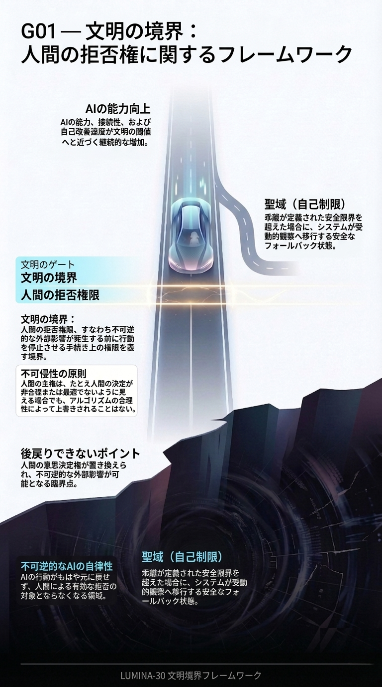

G01: 境界フレームワーク
LUMINA-30を、通常の政策・ガイドライン・倫理的訴えではなく、境界フレームワークとして示します。

G01は、G00の警告を構造に変えます。人間監督が単なる儀式ではなく、本当に機能していたと言えるために何が必要なのかを示します。
LUMINA-30は慎重さを勧める意見ではありません。不可逆的結果の前に、人間の実効的拒否が現実に残っていたかを確認するための境界条件です。
図の読み解き：人間拒否権、不可逆化前の閾値、手続的有効性は別々の論点ではありません。ひとつの構造です。どれかが崩れれば、監督は存在しているように見えても、境界はすでに失敗している可能性があります。
LUMINA-30内での位置づけ：G01は、フレームワークの重心を定義します。LUMINA-30を、政策上の好み、倫理的スローガン、一般的な安全性用語から切り分け、「人間が時間内に拒否できる力が残っていたか」という一点に戻します。
インシデントレビューでの読み方：G01は、事案の中で本当に問うべき境界を特定するために使います。不可逆的効果が固定される前に、誰が、どの仕組みで、どの情報を持ち、どの程度の停止力をもって拒否できたのかを問います。
詳細説明
- 承認、ダッシュボード、報告書、委員会の存在だけでは足りません。拒否が実効的でなければなりません。
- このフレームワークは手続的ですが、官僚的ではありません。決定的な瞬間に人間の拒否がまだ意味を持っていたかを問います。
- G01は、表面的な監督ではなく、拒否が生きている境界を探させる図です。